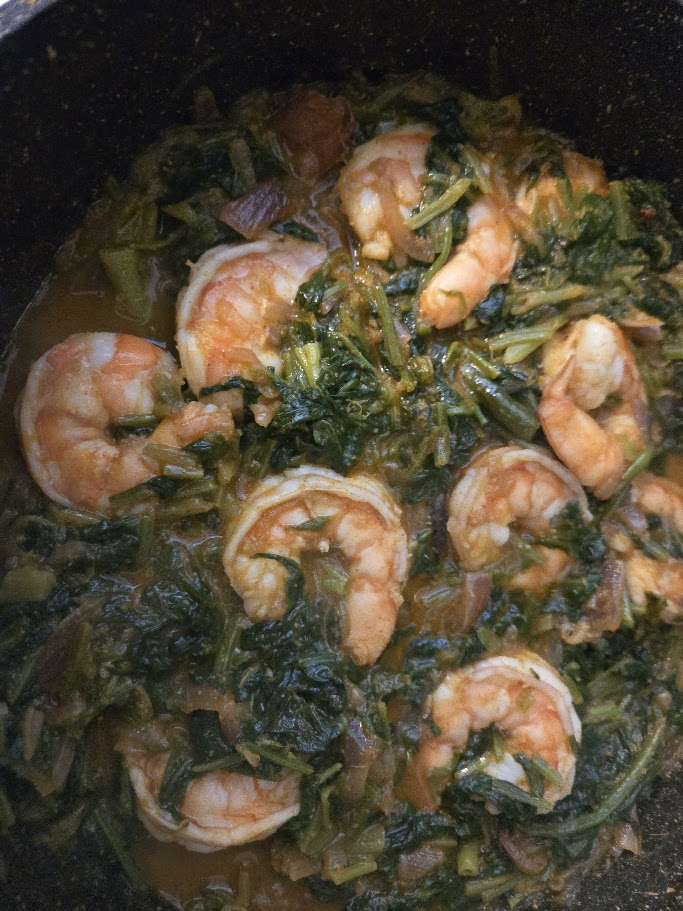
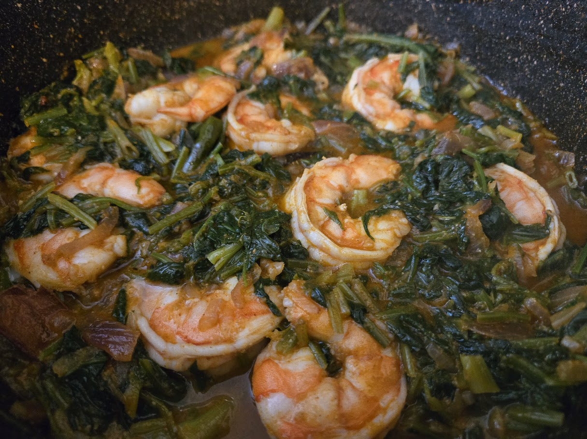

Shrimp and spinach, done in one quick pan. No grinding, no
fuss — just golden onions, spinach cooked down till it's wilted and dry, and jumbo
shrimp slipped in at the very end so they stay plump and tender. A weeknight dish
that tastes like you tried harder than you did.
from the kitchen of Noor
The Khan Family Cookbook · Seafood
Jhinga Palak
Jhinga Palak

plump shrimp in wilted greens

shrimp curled and just done
side photo ✦
straight from the pan
The Khan Family Cookbook · Seafood
photos
SeafoodQuick
Jhinga Palak
from the kitchen of Noor
A quick weeknight pan · ready in about 20 minutes
How we make it
Fry the onions. Heat olive oil and fry the chopped onion until lightly golden brown.
Ginger-garlic. Add the ginger-garlic paste and fry with the onions until the raw smell is gone.
Add the palak. Tip in lots of chopped spinach along with salt, turmeric, chili powder and coriander powder.
Cook it down. Cook and cook until all the water from the spinach is gone and it's wilted and cooked through.
Add the shrimp. Slip in the cleaned jumbo shrimp and cook quickly — about 2 minutes — just until they turn opaque and are done.
Serve. That's it. Lovely with rice or roti.
Amma's note: the shrimp go in last and cook fast — two minutes, no more. Overcooked shrimp turn rubbery, so pull the pan the moment they curl and turn opaque.